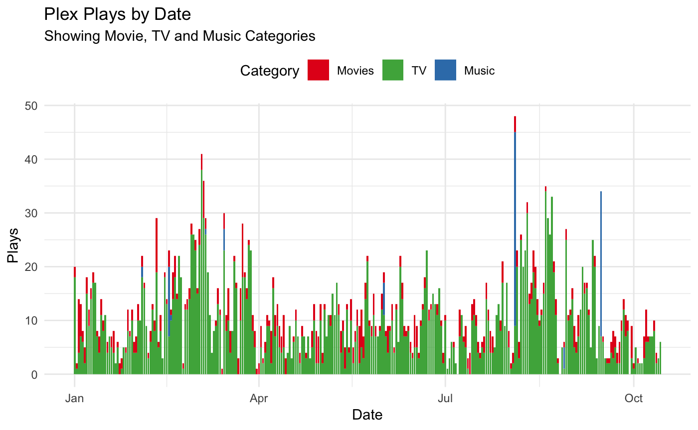
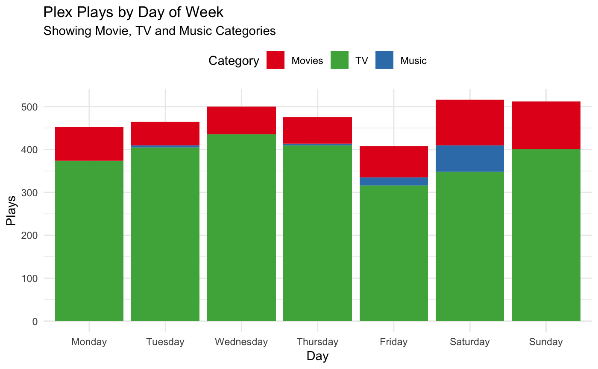
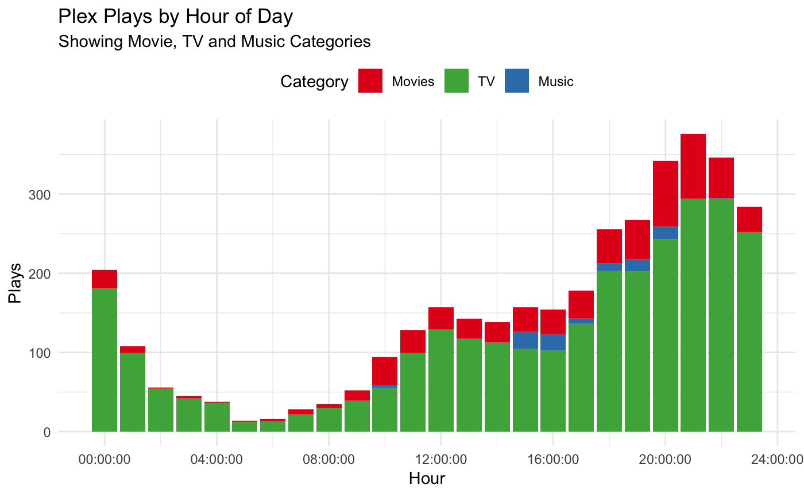

This is tauturri version 0.2.9000 (semver).
The goal of tauturri is to get data out of Tautulli (formerly PlexPy) as simply as possible.
The project is still pretty young, and while it’s reasonably functional, there might still be some issues. At least it passes all the tests, I guess?
Installation
Current stable version on CRAN:
install.packages("tauturri")Current development version on GitHub:
if (!("remotes" %in% installed.packages())){
install.packages("remotes")
}
remotes::install_github("jemus42/tauturri")Setup
To use this package, you’ll need a working instance of Tautulli, enable the API and store the URL and your API key.
In your ~/.Renviron, set the following:
# Tautulli
tautulli_url=<Tautulli URL (with port, if necessary)>
tautulli_apikey=<Tautilli API key>That’s it.
Alternatively use Sys.setenv() to set the appropriate values in a script.
Server Info
info <- get_servers_info()
# Probably shouldn't show URL etc.
names(info)
#> [1] "port" "host" "version"
#> [4] "name" "machine_identifier"
info[c("name", "version")]
#> # A tibble: 1 x 2
#> name version
#> <chr> <chr>
#> 1 PPTH 1.11.3.4803-c40bba82e
get_plays_by [date|dayofweek|…]
All plays in the current year, per day:
plays <- get_plays_by_date(time_range = lubridate::yday(lubridate::now()))
plays %>%
gather(category, playcount, TV, Movies, Music) %>%
ggplot(aes(x = date, y = playcount, fill = category)) +
geom_col() +
scale_fill_brewer(palette = "Set1",
breaks = c("Movies", "TV", "Music")) +
labs(title = "Plex Plays by Date",
subtitle = "Showing Movie, TV and Music Categories",
x = "Date", y = "Plays", fill = "Category") +
theme_minimal() +
theme(legend.position = "top")
… per day of week:
plays <- get_plays_by_dayofweek(time_range = lubridate::yday(lubridate::now()))
plays %>%
gather(category, playcount, TV, Movies, Music) %>%
ggplot(aes(x = day, y = playcount, fill = category)) +
geom_col() +
scale_fill_brewer(palette = "Set1",
breaks = c("Movies", "TV", "Music")) +
labs(title = "Plex Plays by Day of Week",
subtitle = "Showing Movie, TV and Music Categories",
x = "Day", y = "Plays", fill = "Category") +
theme_minimal() +
theme(legend.position = "top")
… and per hour of day:
plays <- get_plays_by_hourofday(time_range = lubridate::yday(lubridate::now()))
plays %>%
gather(category, playcount, TV, Movies, Music) %>%
ggplot(aes(x = hms::hms(hours = hour), y = playcount, fill = category)) +
geom_col() +
scale_fill_brewer(palette = "Set1",
breaks = c("Movies", "TV", "Music")) +
labs(title = "Plex Plays by Hour of Day",
subtitle = "Showing Movie, TV and Music Categories",
x = "Hour", y = "Plays", fill = "Category") +
theme_minimal() +
theme(legend.position = "top")
API Functions Not Yet Implemented
api_functions <- names(api_request(cmd = "docs")$data)
api_functions <- api_functions[grepl("^get_", api_functions)]
sort(api_functions[!(api_functions %in% getNamespaceExports("tauturri"))])
#> [1] "get_apikey" "get_date_formats"
#> [3] "get_geoip_lookup" "get_logs"
#> [5] "get_metadata" "get_new_rating_keys"
#> [7] "get_notification_log" "get_notifier_config"
#> [9] "get_notifier_parameters" "get_notifiers"
#> [11] "get_old_rating_keys" "get_plex_log"
#> [13] "get_pms_token" "get_pms_update"
#> [15] "get_server_pref" "get_settings"
#> [17] "get_synced_items" "get_user"
#> [19] "get_whois_lookup"CoC
Please note that this project is released with a Contributor Code of Conduct.
By participating in this project you agree to abide by its terms.